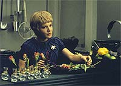
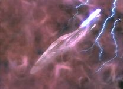
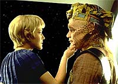
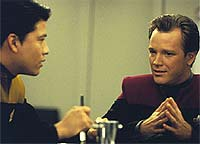

|
MANCHETE
DO EPISDIO
Remake
civilizado de episódio clssico
recheado com tecnobaboseira
Episódio
anterior | Prximo
episódio
Sinopse:
Data Estelar: 48546.2.
 Querendo
levantar o moral da tripulao, Janeway se anima para explorar uma
nebulosa que emite altos níveis de partculas omicron, teis para
as reservas de energia da nave. Mas, assim que a Voyager entra na
nuvem, encontra uma barreira de energia que a leva a uma parada
total. Forando a sua entrada com phasers, a nave continua em
direção ao centro da anomalia, depois do que bombardeada com
glbulos peculiares que se prendem ao casco. Com a energia da
Voyager sendo drenada, a capitã ordena a sada da nebulosa, mas
desta vez a tripulao no consegue atravessar a barreira. Assim,
disparam um torpedo fotnico que os liberta.
Com o fim da diverso, Paris convida
Kim para juntar-se a ele em um novo programa do holodeck, uma
recriao do bar francs Sandrine's, que freqentava nos tempos
da Academia. Enquanto isso, Torres passa seu tempo analisando um dos
glbulos que se prenderam ao casco. Surpresa com os resultados,
confirma sua descoberta com o Doutor e informa a capitã.
 Os
glbulos so elementos orgnicos de uma forma de vida muito
maior. Em outras palavras, a nebulosa na verdade uma entidade
viva e os fenmenos que encontraram fazem parte de seus sistemas
naturais de defesa. Preocupada que o encontro com a Voyager pode ter
ferido gravemente uma forma de vida inocente, Janeway prope que
eles retornem e reparem o mal causado. O Doutor diz que as amostras
orgnicas parecem indicar que a entidade tem a capacidade de se
regenerar, dado o estmulo apropriado.
Retornando para a
"nebulosa", a Voyager se prepara para irradiar a ferida
com um raio nuclenico. Contudo, a tripulao interrompida
pelo sistema de defesa, que novamente entra em ao. Embora a nave
seja avariada, eles conseguem retornar ao local do machucado. Logo
antes de fechar a ferida, a Voyager consegue escapar da nuvem e
traa um curso para um planeta onde pode recuperar as reservas de
energia perdidas. Durante o percurso, a capitã acompanha Paris e
seus outros oficiais no Sandrine's, onde todos se surpreendem com a
sua habilidade no jogo de sinuca.
Comentrios:
"The Cloud" quase um "remake"
de um dos clssicos da série original de Jornada nas Estrelas:
"The Immunity Syndrome". S que o original
muito melhor.

Na verso dos anos 60, Kirk, Spock e cia. encontram uma enorme
criatura espacial que estava vagando pelo espao. A ameba gigante
tinha como passatempo predileto jantar naves da Federao. Isto ,
at encontrar a Enterprise, que acabou explodindo o alienígena.
Em
Voyager, série adepta do tom "vamos preservar a
natureza", a nave encontra uma nebulosa e s depois descobre
que trata-se de um alienígena gigante.
Em vez de fazer o papel de exterminadores espaciais, como na Série
Clássica, os tripulantes da Federao decidem ajudar a
criatura alienígena, que foi involuntariamente machucada pela própria
invaso "cirrgica" da Voyager.
De resto, muita tecnobaboseira, empacotada com desenvolvimento da
interao entre os personagens. Paris mostra seus interesses
hologrficos, Janeway se aproxima da tripulao, por intermdio
de Harry. Chakotay mostra mais sua cultura indgena.

Todos esses desenvolvimentos no tm a menor relao com a história,
fazendo com que o trabalho de roteiro se aproxime mais do estilo
"novela". Ou seja, grande parte das cenas no servem para
desenrolar os eventos, mas apenas para "mostrar" o
cotidiano dos personagens.
Pode parecer "encheo de lingia", mas como os
personagens ganharam mais textura graas a esses pequenos interldios,
valeu a pena.
Resumindo,
trata-se de uma história fraca e esquecvel. Mas vale a pena
conferir este episódio sob a luz da Série Clássica,
notando as diferenas operadas em Jornada durante seus mais
de trinta anos de existncia, "civilizadamente" indo onde
ninguém jamais esteve. E d-lhe tecnobaboseira!
Citaes:
Neelix - "Well, uh, lets
see if we can't find some space anomaly today that might rip us
apart."
("Bem, uh, vamos ver se no conseguimos encontrar alguma
anomalia espacial hoje que possa nos partir em pedaos.")
Kim - "Somebody picked your pocket, on Earth?"
("Algum bateu sua carteira, na Terra?")
Paris - "Oh, they just do it for the tourists. They give it
back, usually."
("Oh, eles fazem isso para os turistas. Eles devolvem,
normalmente.")
Trivia:
 Nesse episódio ficamos sabendo mais sobre Tom Paris e Harry Kim,
inclusive conhecendo um salo de bilhar francs que Paris criou no
holodeck. Tambm ficamos sabendo mais sobre a ansiedade de Neelix e
o esprito de aventura de Kes, além do conhecimento de Chakotay
sobre seus ancestrais nativo-americanos.
Nesse episódio ficamos sabendo mais sobre Tom Paris e Harry Kim,
inclusive conhecendo um salo de bilhar francs que Paris criou no
holodeck. Tambm ficamos sabendo mais sobre a ansiedade de Neelix e
o esprito de aventura de Kes, além do conhecimento de Chakotay
sobre seus ancestrais nativo-americanos.
interessante também a dúvida da capitã
Janeway: o que a tripulao precisa nesse momento difícil? Uma
capitã "maior-que-a-vida", ou uma capitã
"amiga"? Na cena final, no salo de bilhar de Tom Paris,
descobrimos a resposta. Cenas como essa mostram que esse episódio, "The
Cloud", mais sobre pessoas do que sobre aventuras.
Ficha
técnica:
História de Brannon Braga
Roteiro de Tom Szollosi e Michael Piller
Dirigido por David Livingston
Exibido em 13/02/1995
Produção: 006
Elenco:
Kate Mulgrew como
Kathryn Janeway
Robert Beltran como Chakotay
Roxann Biggs-Dawson como B'Elanna Torres
Robert Duncan McNeill como Tom Paris
Jennifer Lien como Kes
Ethan Phillips como Neelix
Robert Picardo como Doutor
Tim Russ como Tuvok
Garrett Wang como Harry Kim
Elenco convidado:
Larry Hankin como
Gaunt Gary
Angela Dohrmann como Ricky
Judy Geeson como Sandrine
Luigi Amodeo como "o gigol"
Episódio
anterior | Prximo
episódio
|